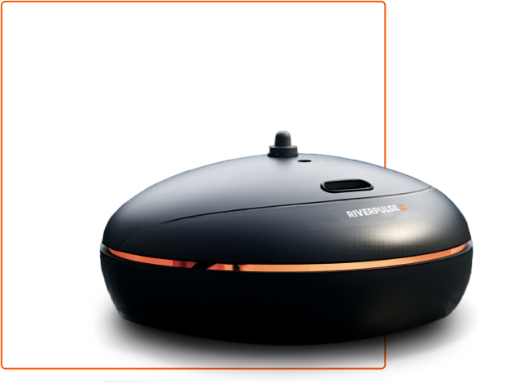
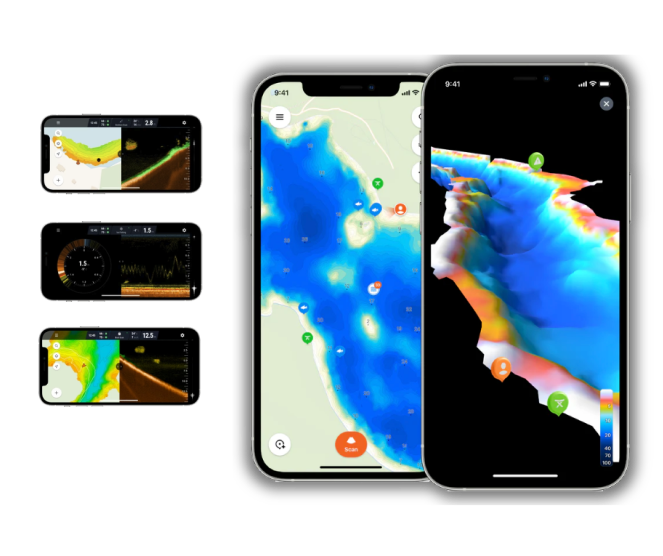
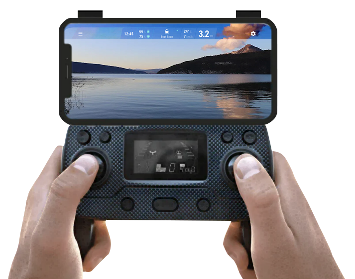

PÊCHER COMME UN PRO
RIVERPULSE, LE SONDEUR TÉLÉCOMMANDÉ RÉVOLUTIONNAIRE POUR UNE
PÊCHE EN EAU DOUCE ULTIME. EXPLOREZ LES PROFONDEURS AVEC
PRÉCISION À CHAQUE COUP.

Comment fonctionne le RIVERPULSE ?

RIVERPULSE
Il redéfinit l’expérience de pêche en eau douce avec son sondeur télécommandé avancé. Explorez les recoins les plus mystérieux des cours d’eau, identifier les bancs de poissons avec une précision exceptionnelle et maximisez vos chances de succès. Compact, puissant et facile à manoeuvrer, le Rvierpulse offre une technologie de pointe pour les passionnés de pêche à la recherche d’une aventure inégalée. Plongez ans l’avenir de la pêche avec Riverpulse.
Trouvez le bon endroit plus rapidement !
L’application
Connaissez la profondeur de n'importe quel endroit en un instant simplement en lançant - c'est plus rapide et provoque moins de perturbations que l'utilisation d'un flotteur marqueur. Cartes de profondeur 2D. L'une des plus grandes bases de données de cartes de profondeur communautaires régulièrement mises à jour. Cartes de terrain 3D. De superbes cartes de terrain en trois dimensions présentant les caractéristiques topographiques sous-marines.


La caméra
La télécommande Riverpulse, une extension intelligente de votre expérience de pêche, se connecte facilement à votre téléphone, vous offrant une visualisation en temps réel des profondeurs aquatiques ainsi que la surface. Avec une interface conviviale, vous pouvez contrôler le sondeur à distance, ajuster les paramètres et capturer des images sous-marines, tout en ayant une vue complète de la surface. Transformer votre smartphone en une fenêtre virtuelle vers le monde sous-marin avec la télécommande Riverpulse. Une perspective complète pour une pêche inégalée.
Paiement Sécurisé
Livraison Gratuite
Politique de retour
sous 30 jours